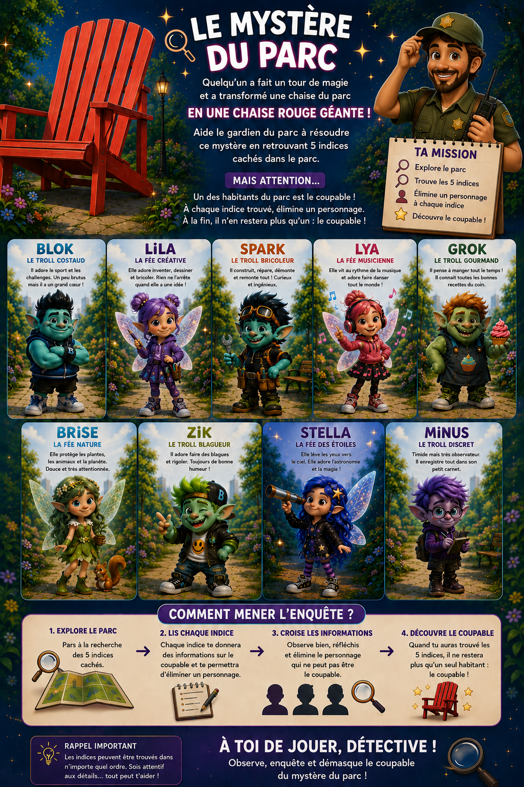

Accueil
✨ NOUVELLE ACTIVITÉ ÉTÉ 2026 ✨
Une enquête grandeur nature gratuite à vivre en famille au cœur du Parc Bouchardon à Monistrol-sur-Loire.
👧 À partir de 3 ans
Des indices simples permettent aux plus petits de participer pleinement à l'aventure.
🧠 Pour les plus grands
Des énigmes plus complexes attendent les détectives les plus observateurs.
Découvrez notre aventure

📍 Rendez-vous au Parc Bouchardon
Avenue Jean Martouret
43120 Monistrol-sur-Loire
Préparez votre sens de l'observation... Les indices sont peut-être déjà tout près de vous !